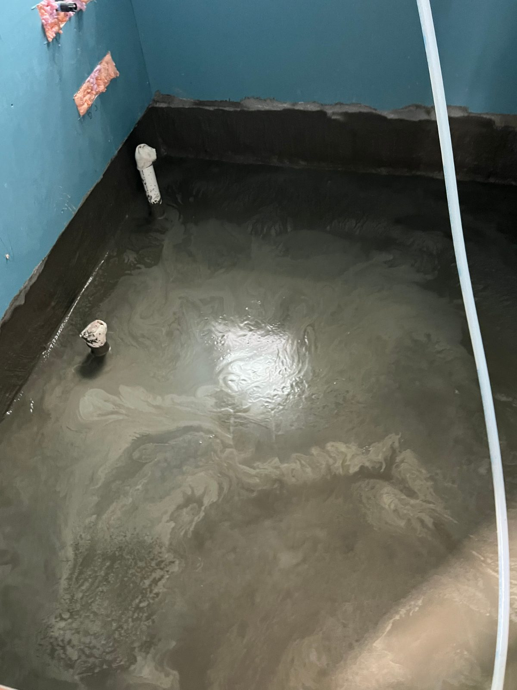
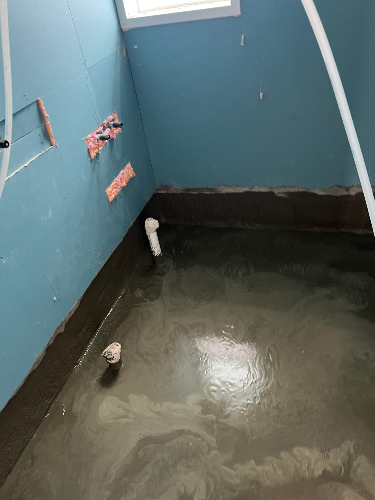
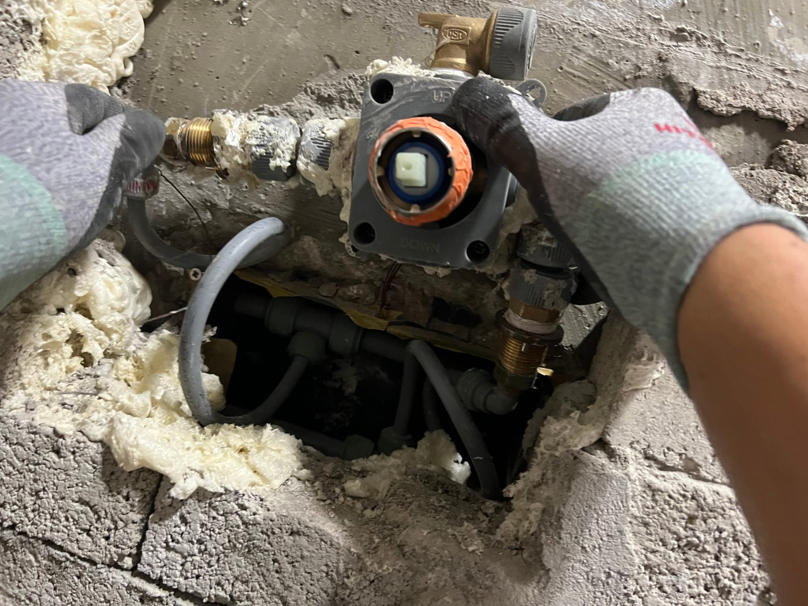

세종 카페 화장실 도막방수 3차 — 난방·환풍기 배관까지 한 번에 정리했습니다

사용량이 많은 상가 화장실이라 도막방수를 3차까지 올리고, 난방과 환풍기 배관 작업을 함께 진행한 현장입니다.
어떤 공사였나요
세종의 한 카페 화장실 현장입니다. 상가 화장실은 주택보다 사용량이 많아 방수 기준을 더 높게 잡아야 합니다. 이 현장은 도막방수를 3차까지 올리고, 난방과 환풍기 배관 작업을 함께 진행했습니다.

영업 중인 가게의 공사 일정
영업장 공사에서 가장 중요한 것은 일정입니다. 건조 시간이 필요한 방수는 차수를 나눠, 영업에 지장이 적은 시간에 맞춰 진행했습니다.
환풍기 배관을 함께 정리한 이유
화장실의 냄새와 습기는 환풍기 배관이 외부로 제대로 연결되어 있는지에 달려 있습니다. 배기가 약하면 습기가 고여 방수층과 마감재의 수명을 줄입니다. 배관을 정리해 배출 경로를 확보했습니다.

상가 화장실 관리 팁
배수구 트랩이 마르면 냄새가 바로 올라옵니다. 영업 전 물을 한 바가지씩 부어 트랩에 물을 채워 두는 것만으로도 냄새 민원이 크게 줄어듭니다.